시급하지만 필수는 아닌 문제? : 작업·발표·태도
<
방가방가.
메일 잘 읽었어. 읽은지 한 달 쯤 됐는데 이제야 답장을 쓰고 있는 건 내가 답장을 잘 쓰고 싶었거나 안 쓰고 싶었나봐.
예전 같았으면 한 달에 몇 개는 써야지 하고 꾸역꾸역 썼을 텐데 요즘은 그냥 쓰고 싶을 때 쓰려고 해. 잘 안 되지만 이걸 계속 좋아하기 위해선 조금 거리를 두는 방식이 더 적절한 듯해서.
아니려나. 효과 없으려나. ^^
너의 메일 <자유 낙하>에서 내가 제일 자주 기억하는 말은
요거였어. 이 문장들을 읽은 후 내가 미술에 대해 알고 있던 개념의 모양이 좀 더 잡혔음.
난 예전에 '구원'이라는 단어를 통해서 생각을 많이 했는데, 최근에 본 책에서는 구원을 '사유되기 이전의 세계, 사유가 건드리기 이전의 세계를 사유 가능하고 소통 가능한 세계로 만드는 것'으로 부르더라고.
너가 《키키 스미스 ― 자유낙하》를 통해 위 문장들을 적을 수 있었던 건 아무래도 키키 스미스의 작품들이 그런 역할을 실제로 해냈기 때문이겠지.
조금 더 생각해보면, 위 문장들 정도의 일반적인 말하기가 가능했던 건 《키키 스미스 ― 자유낙하》 전이 회고전이기도 하기 때문인 것 같아.
회고전은 뭐랄까, 보통 개인전이 새로운 시리즈를 발표하거나 그동안 작가가 보냈던 삶 & 만들기의 시간 - 한 시기 - 를 집적해서 보여주는 것을 목표로 한다면
회고전은 그 전시에 쏠리는 주목도가 작가의 말statement보다 그 작가 자체에게로 수렴된다고 생각하거든.
정서영 개인전, 이불 개인전, 히토슈타이얼 개인전 모두 나에게는 그랬어.
그래서 보통이라면 답장으로 《키키 스미스 ― 자유낙하》 전에 대해 적겠지만, 그보다는 실린더Cylinder에서 열린 《TORQUE3 / HIGH BEAM》으로 대화를 이어가고 싶어.

《TORQUE3 / HIGH BEAM》은 최선아와 장순원의 2인전이야. 이제 갓 대학에서 졸업 전시를 마친 작가들이 참여한 전시라고 알고있어. 내가 이 전시를 알게된 건 참여작가 장순원이 올해 초에 동료 작가들과 열었던 오픈 스튜디오에 가봤었기 때문. 실린더 계정 팔로우하고 있다가 이 사람 그 사람인가 싶었는데 맞더라, 그렇게 가보게 됐어.
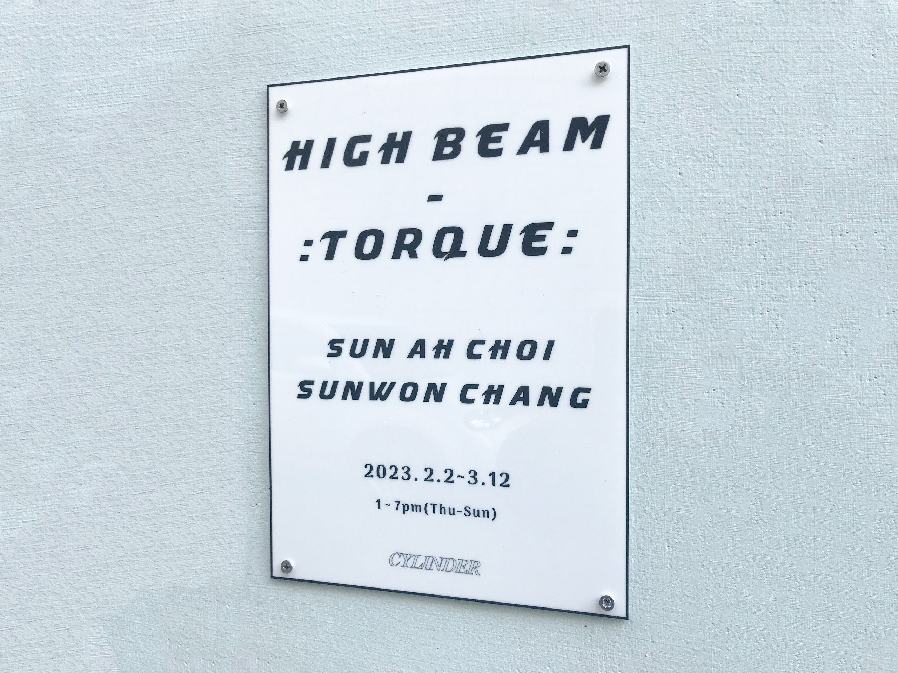 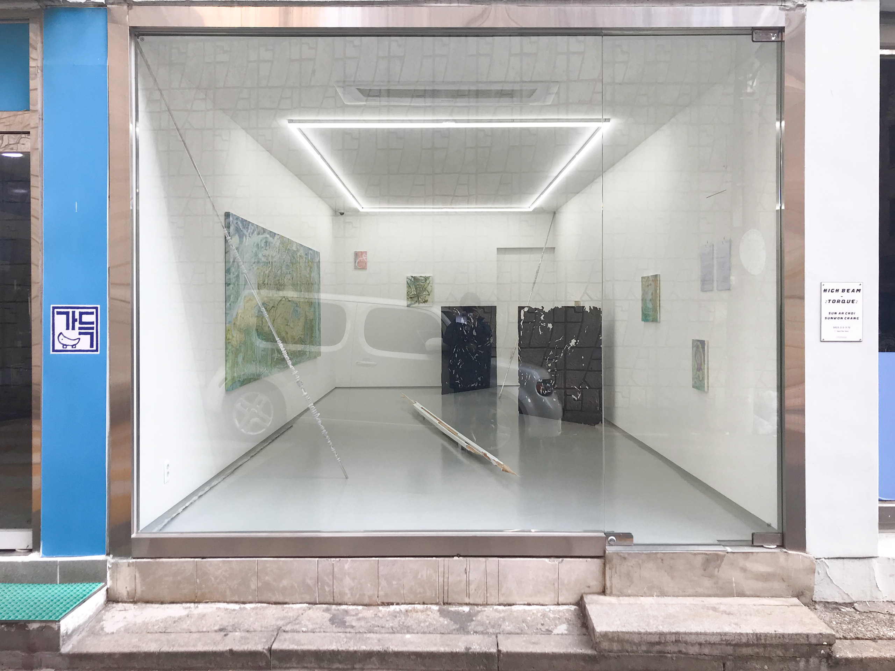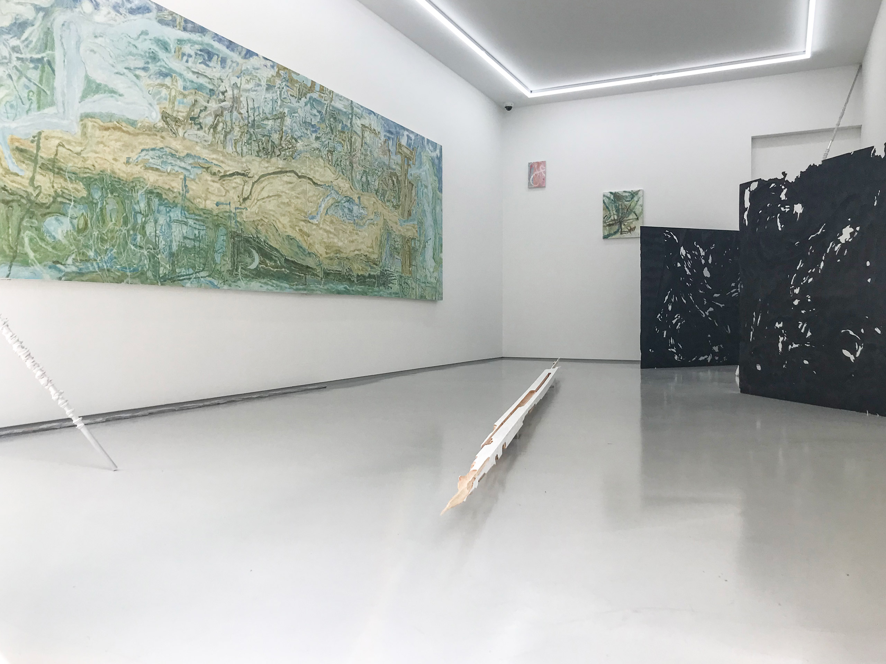 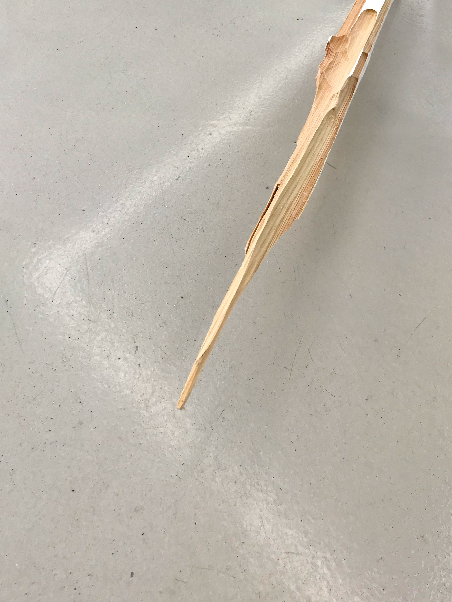
공간에 들어가니 나를 맞아준 건 화려한 조명이 아닌 요 뾰족한 친구였어. 처음에는 그리 존재감이 강하지 않아서 지나쳤는데 다시 보니 끝이 뾰족해서 이게 소소한 공격일 수 있겠다는 생각이 들더라. 《키키 스미스 ― 자유낙하》 1층 입구에 있던 <메두사>
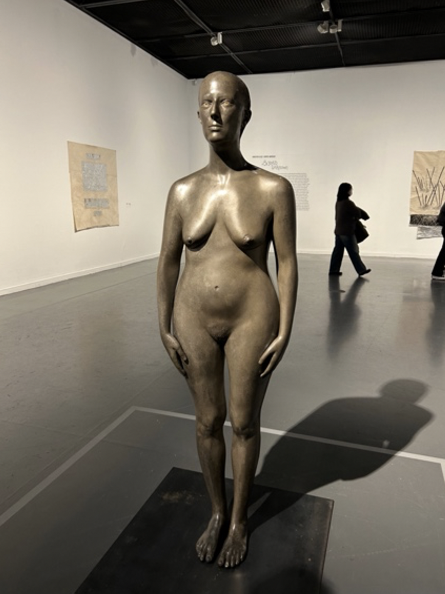도 떠오르고. 전혀 다른 작업이긴 하지만 이 두 작업은 네가 전에 보내준 대로 '관객과의 물리적 만남이 고려된' 설치였다고 느꼈어. 한국에서 이렇게 관객과의 관계를 고려하면서 혹은 문제화 - "헉! 저거 뭐지!" 생각하게 - 하면서 작품 설치하는 전시가 많이 없다고 생각해. 대부분 다 "우리 작품 fancy하죠~ 우리가 잘 디피해뒀으니 여러분들은 그냥 조용히 보기만 하시면 됩니다~~ 하하하" 이 느낌이랄까.
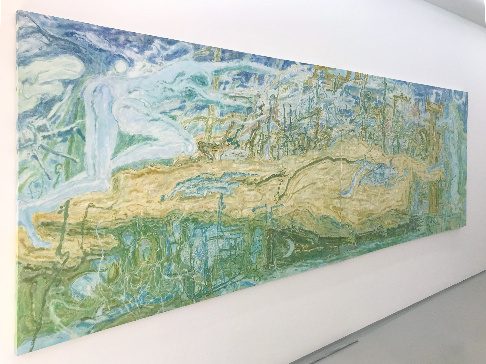 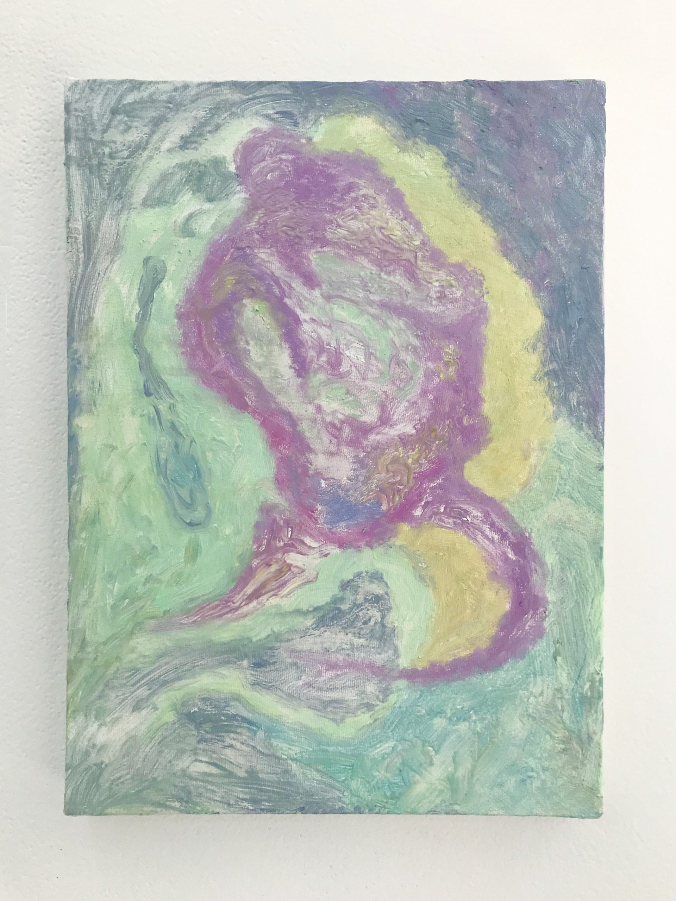 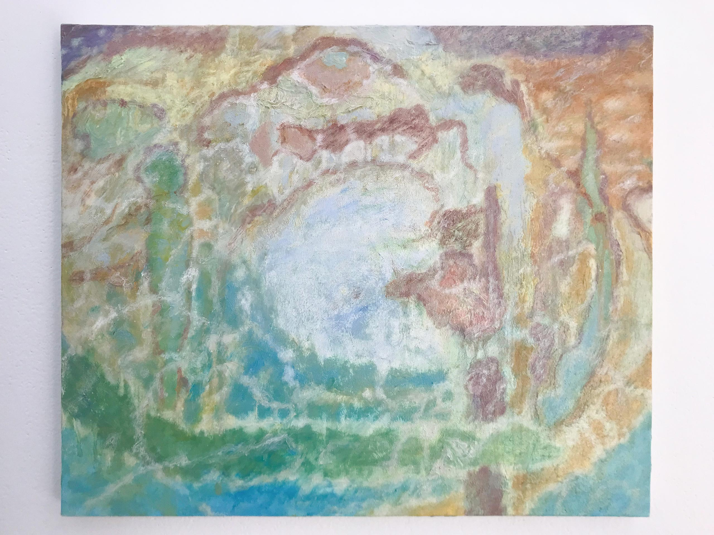
먼저 본 건 장순원의 Painting. 바로 위 사진처럼, 그림 겉면에 올라와있는 물감 덩어리 - 떡진 물감이 적극적으로 튀어나와 있는 점이 특징적이라고 느꼈음.
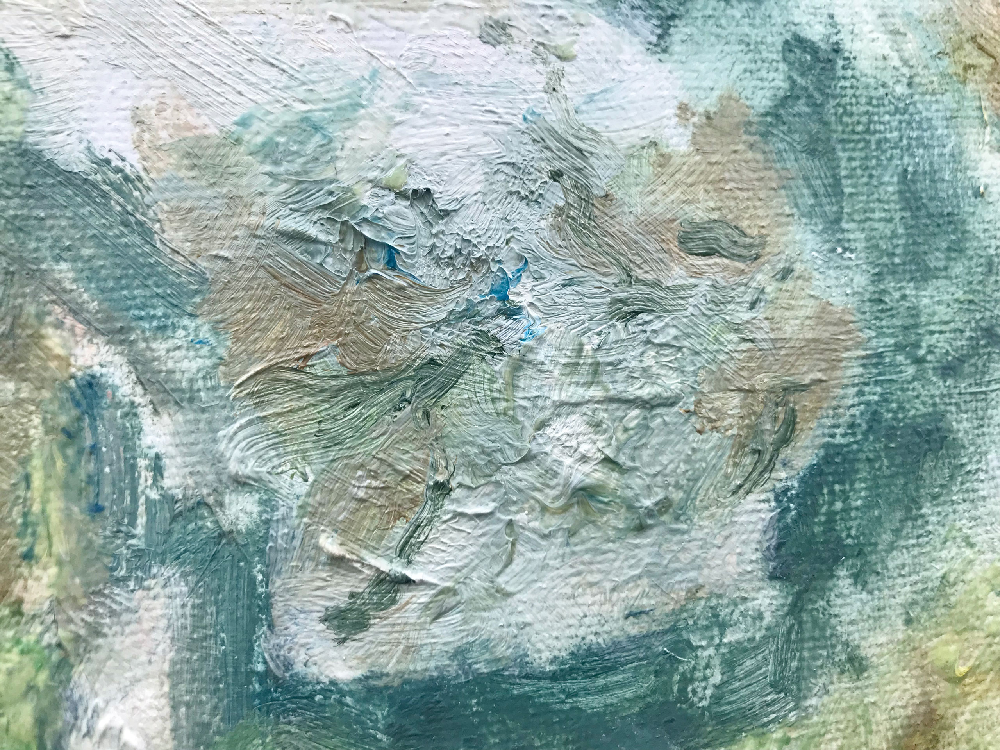 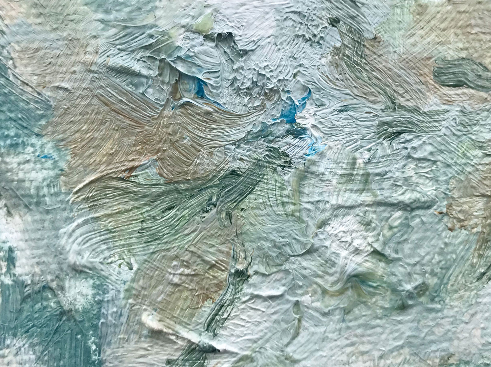
그림에 대한 전반적인 인상은 구상/추상 따지자면 추상에 더 가까웠어.
물리적 현실에 있는 형체를 그대로 재현하지 않고 - 디테일을 눈코입, 잎과 같은 대상의 재현에서 생성하지 않고 - 그것의 선이나 색, 화면 구분 정도만을 가져와서 추상처럼 보이는데, 그 추상을 이루는 붓 터치가 짧고 작아서 독특했음. 보통 이런 추상은 크고 시원한 붓터치로 이뤄졌던 걸 많이 봐서 독특하다고 느낀 것 같아.
앞서 말한 오픈 스튜디오 갔을 때 선이 아닌 점으로만 이루어진 연필 드로잉이 있었다? 작가 이름을 모른 채로 봤었는데 이건 살면서 처음 보는 것 같아서 이거 누가 그린 건지, 어떻게 그린 건지 물어봤었는데 장순원 작가 분이더라고.
판화 수업을 들었을 때 거기서 판을 조금조금씩 팠던 것을 응용해서 그렸다고 하셨나 그랬는데, 그게 작업에서 '특징적'으로 보일만큼 자기 언어로 된 것 같았고 위 디테일도 그런 과정 통해서 발견되고 만들어진 후 전개한 문법이 아닐까란 상상이 돼서 재밌었어.
그런 감상의 연장에서
앞서 언급한 특징들이 집적돼있는 이 제일 큰 작품을 보고 가만히 있다가
"와, 이거 성취Achievement다."
라는 생각이 들더라. 여기서의 성취란 '무언가를 이루었다'는 것을 뜻해. 이루었다고 말했지만 '성공'이란 단어에 담겨있는 쫒고 쫒기는 속도감과는 다르지.
만약 성취가 덮밥이라면,

이런 것 같고, 장순원의 <여명의 속력으로 (At the Speed of Dawn)>에서 보여지는 작가가 들인 시간과 힘, 물감의 양 같은 게 본인이 거친 하나의 싸움으로 느껴져 '성취'라는 단어가 떠오른 듯.
나는 이제 막 대학을 졸업한 장순원의 성취가 네가 메일에서 좋다고 말한 키키스미스의 작품, 더 정확히는 키키스미스의 성취와 크게 다르지 않다고 생각해. 사실은 다르지 않은 거라고 생각하려 노력하고 있어.
객관적인 평가의 차원에서, 작품을 바라보는 미술계의 가치 판단 기준에서 같다는 게 아니라, 한 사람이 지속적으로 무언가를 탐구하고 만들려고 재료를 사용하면서 시간을 보냈다는 측면, 그러므로 자신이 보고싶었던 무언가를 만들어내는 데에 성공했다는 측면에서.
글을 쓰다보니 박솔뫼 소설가가 예전에 등단에 대해서 했던 말이 떠오른다.
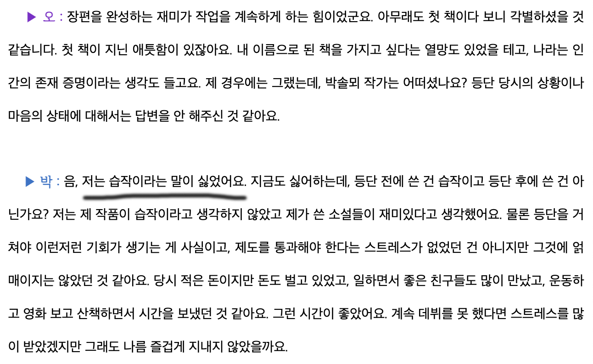
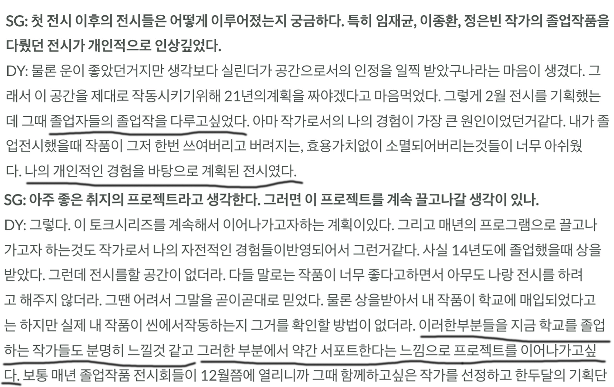
두번째 인터뷰는 본 전시를 기획하고 실린더를 운영하는 DY -> 노두용의 인터뷰야. 이걸 가져온 이유는 뭐였더라, 음... 지난번 WESS에서 네 명의 기획자들(김얼터, 노두용, 박시내, 송하영)이 참여했던 전시 《party 223》가 있었어. 정확히 기억은 안 나지만 거기서 노두용이 '혼자 있을 때 되게 힘들었다. 근데 실린더를 열고 운영하면서 실린더를 사랑하게 되니까 삶이 좋아졌다. 나는 실린더의 노두용이다! (PO당당WER)' 이라고 뭔가 희망 차게 이야기했던 글을 보고 "아, 그럴 수도 있겠구나. 무언가를 하나 만들어서 계속하고 열심히 하는 것으로 삶이 좋아질 수 있는 거였지" 생각하면서 그 감정이 기억에 남아 찾아본 인터뷰였어.
예전에 서울시립미술관에 대한 나의 호감과 국립현대미술관에 대한 비호감에 대해서 생각해보다가 '공간을 운영하는 사람이 참 중요하구나'라고 생각했거든? 그런 점에서 노두용이 과거의 자신이 졸업 전시 때 겪었던 아쉬움, 막막함 그런 것들을 잊지 않고 지금 자신의 자리에서 기획으로 풀어낸 게 좋았어. 그리고 그렇게 자신에게 중요했던 기억을 잊지 않는 능력이 양심이라고 생각해.
그런 양심의 사치를 부릴 수 있는 작가의 시간... 평소에는 고요히 작업하는 시간을 보내다 가끔씩 성취의 순간을 맞거나 맞지 않으며, 그 성취를 시대가 알아보거나 알아보지 못하는 게 작가의 삶 같아.
아니다. 뒤에 시대 이야기는 직업인으로서의 작가 이야기에 가깝네. 작가의 시간과 시대는 서로 닿지 못할 수도 있는 거니까 우리는 앞의 것만 두고 보자.
이러한 '성취' & '그 성취 알아봄'의 연쇄가 계속되면 키키스미스처럼 회고전하는 작가가 될 수도, 되지 않을 수도 있는 거겠지. 미술대학도 미술계도 '누가 어디서 전시를 했네, 상을 받았네, 공모 사업에 붙었네' 이런 소식들로 시끄럽고 그 위계가 안 그래도 힘들어하는 미술인들의 마음을 더 시끄럽게 하는데, 모두... 평정심을 갖출 수 있다면 좋겠다. 회고전하는 작가가 되지 않아도, 베니스 비엔날레 작가가 되지 않아도 괜찮다는 걸 알기 위해서 작가의 길을 택했을 텐데 여기까지 와서 그런 생각을 해야된다는 게 너무 가혹하잖아.
요즘 여기저기 다니면서 그런 생각이 들더라. ^^ 여튼
멋진 봄.
재훈
자유 낙하
조현진
2023.02.07